201
街並み | street scape
自転車、トラム、歩行者、クレーン2個、なんでも受け入れてくれるような街並み。
Bicycles, streetcars, pedestrians, two cranes, the
city seems to accept everything.
str,pln /be
202
像 | sclupture
像が街にあるのは日本と共通。
Statues are common in the city, as they are in Japan.
ex /be
203
道路 | way
真ん中車線のトラムで横断歩道がそれぞれの車線でずれている。
The tram lane in the middle makes the pedestrian crossing
non-straightforward.
trf /be
204
信号機 | traffic light
左の信号が赤青以外の情報を補ってくれる。よく見ると「！」が見える。
The traffic light on the left compensates for information
other than red and blue. If you look closely, you can see “!" can be seen.
trf /be
205
クレーン | crane
クレーンの街、アントウェルペン。
Antwerpen, the city of cranes.
str /be
206
橋 | bridge
車道と歩道ががっちり分けられている。
The roadway and sidewalk are clearly separated.
str /be
207
道路 | way
アントウェルペンには風車もある。
Antwerpen also has windmills.
trf /be
208
街並み | street scape
フィンランドの工事現場にある立入り禁止標識(No.92)と少し似ているが表情が若干違う。
It looks a little like the No Trespassing sign
at a construction site in Finland (No.92), but the facial expression is slightly different.
str,pln,sgn /be
209
船 | ship
港町アントウェルペンらしい景色。
A view is typical of the port town of Antwerpen.
trf /be
210
航路(?) | channel(?)
船が通る用？ただの水門？
Is it for ships? Just a sluice gate?
trf /be
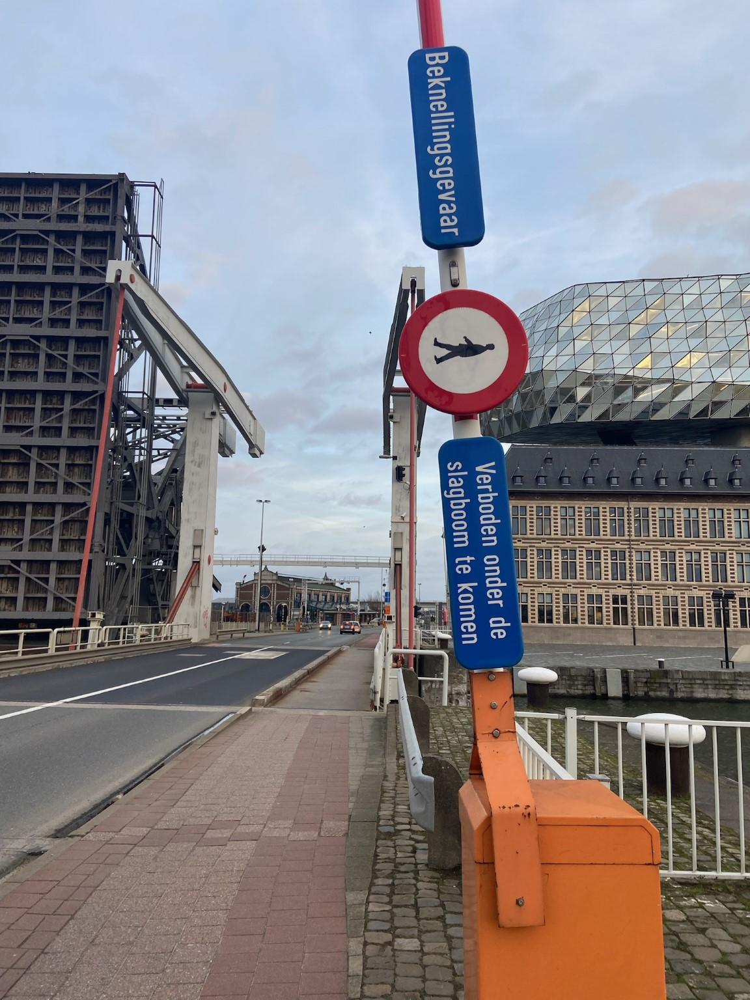
211
標識 | sign
可動橋。バーが上がっているときは空中散歩。バーが下りているときは普通に歩けるという意味でとらえられないこともない。
A movable bridge. When the bar is
up, the person on the sign walks in the air. When the bar is down, it can be understood that
it's okay to through.
trf,sgn /be
212
道路 | way
まったくなにがなんだかわからない交差点。もはや交差点でもないのかも。
An intersection that is difficult to undesrstand at all.
Maybe it's not even an intersection anymore.
trf /be
213
建物 | building
凝ってる建物。
An elaborate building.
trf,pln /be
214
ヘルシンキ空港・ヘルシンキ空港駅連絡通路 | accessway (Helsinki airport&station)
ヘルシンキ空港からヘルシンキ空港駅へ。このエスカレーターが長く、空間がでかいので怖い。
From Helsinki Airport to Helsinki Airport
Station. This escalator is scary because it is long and the space is huge.
str /fin
215
電車 | train
牛さん仕様の電車。
The train is milk-design.
trf /fin
216
ユバスキュラ大学図書館 | library of JYU
ユバスキュラ大学図書館の天井がナガシマスパーランドの白鯨みたい。
The ceiling of the library of Jyväskylä University looks
like a white whale in Nagashima Spaland.
str /fin

217
ユバスキュラ大学建物 | building of JYU
昔の体育館っぽい。ぶら下がり棒がある。ロープがある。日本との共通点。
It looks like an old gym. There is a hanging bar. There
is a rope. Similarities with Japanese.
str /fin
218
ユバスキュラ大学建物 | building of JYU
二重窓はフィンランドで必須機能。
Double-paned windows are an essential feature in Finland.
str /fin
219
ユバスキュラ大学建物 | building of JYU
長い廊下。秘密基地につながっているみたいでわくわくする。
A long corridor. It's exciting, as if it leads to a secret
base.
str /fin
220
標識 | sign
ぎりセーフの標識。
A sign is still working, not bulied in the snow.
trf,sgn /fin
221
標識 | sign
手前はセーフ。奥はぎりセーフ。
In the front is working. The back is just barely working.
trf,sgn /fin
222
ポスト＆ゴミ箱 | post & rubbish bin
ポストとゴミ箱。自然の小道ができてる。
A post box and a rubbish bin. A natural path has been formed.
pln /fin
223
はしご | ladder
地面も雪でつるつるなうえにこの曲がりようははしごとして信頼に足らない…。
The ground is slippery with snow and this bend is not
reliable as a ladder...
ex /fin
224
道路 | way
まいた砂が見て取れるつるつる道路。
The road is so smooth. You can see the sand that has been spread on it.
trf,sgn /fin
225
標識 | sign
6月ごろに来る羊もしくはヤギのための標識。
A sign for sheep or goats that come around every June.
sgn /fin
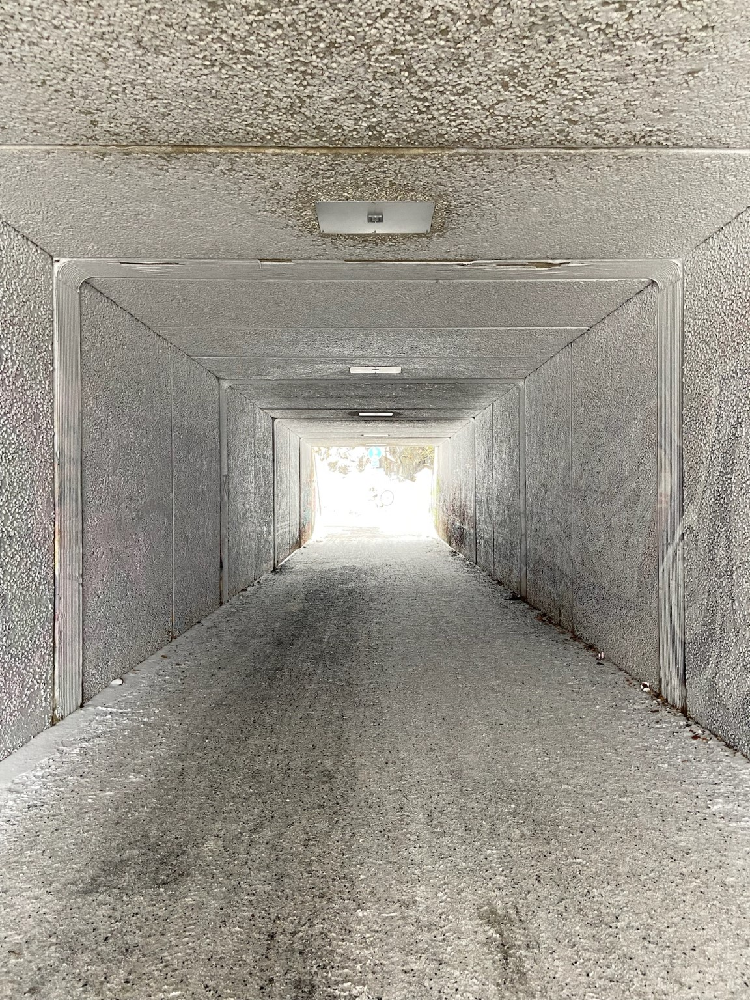
226
トンネル | tunnel
雪で白くなったトンネル。
A tunnel whitened by snow.
str /fin

227
標識 | sign
埋もれた自転車が顔を出してきた。
A buried bicycle is coming out.
trf,sgn /fin
228
4本の木 | 4 trees
一瞬Kraftwerkかと思ったら4本の木だった。
For a moment I thought it was Kraftwerk, but it turned out to be
four trees.
ex /fin
229
橋 | bridge
白くなった湖、凍っているので橋を渡らず湖を歩く人が。冬の橋利用者は少なくなる。
The lake turned white, and people walk on the lake
instead of crossing the bridge because it is frozen. In winter, the number of bridge users
decreases.
str /fin
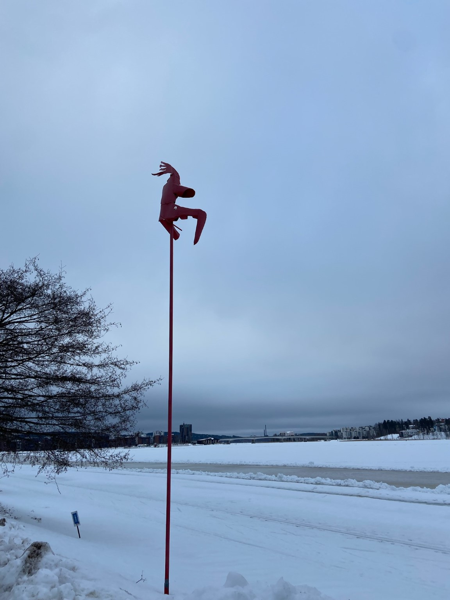
230
湖 | lake
用途不明だが湖を見守っているのは確か。
The purpose of the bridge is unknown, but it surely watches over the
lake.
ex /fin
231
標識 | sign
私が今まで訪れたヨーロッパでは比較的多くの国で見たことがある標識。住宅街ですよという標識。それだけでスピードの意識が変わるのだろうか。
I have seen this sign
in many European countries I have visited. It is a sign that says, “This is a residential area."
I wonder if that alone changes people's awareness of speed.
trf,sgn /fin
232
バス | bus
サンタクロースがいるロヴァニエミのバス。日本で運行しているバスのうちここまで汚いのは見たことない。
A bus in Rovaniemi where Santa Claus is
in. I have never seen such a dirty bus among the buses operating in Japan.
trf /fin
233
自動販売機 | vending machine
昔の自販機を改造してクレカでも買えるようにしている。Muumi（ムーミン）のドリンク、試さなかったことが悔やまれる。果たして何味なのだろうか。
I regret that I did
not try the Muumin drink. I wonder what flavor it is.
ex /fin
234
標識 | sign
緊急車両用の道を表すpelastustie。絵も一緒に描かれている緊急ルート標識を見るのは（多分）始めて。緊急時に使用される模様。
This is (probably) the
first time I've seen an emergency route sign with a picture on it. It seems to be used in an
emergency.
sgn /fin
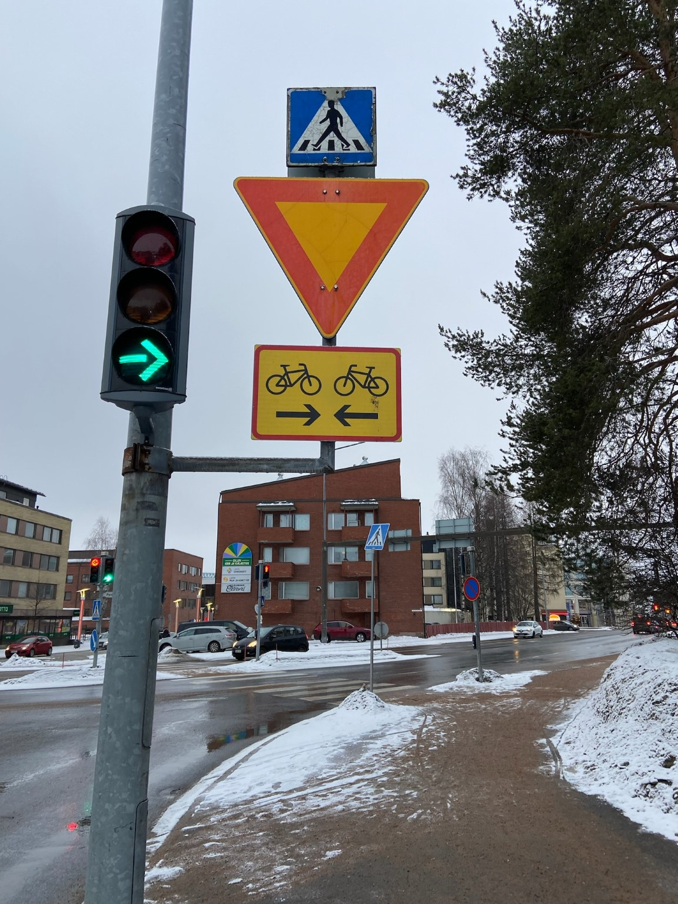
235
標識 | sign
このままだと自転車が正面衝突する標識。歩行者標識の年季がすごい。信号の矢印は日本のLED信号とシルエットがほぼ一緒。
A sign that would cause a
head-on collision with a bicycle. The pedestrian sign is very old. The arrows on the traffic
light have almost the same silhouette as the LED traffic light in Japan.
trf,sgn /fin
236
マンホール | manhole
空気に触れて雪を溶かすから危ない穴を作り出してしまうマンホール。
A manhole that creates a dangerous hole because it makes
snow melted touching the air.
mh /fin
238
ユバスキュラ大学建物 | building of JYU
木とレンガのぬくもりが外の寒さを感じさせなくてびっくり。
The warmth of the wood and bricks makes me not feel the cold
outside.
ex /fin
239
イースターバージョンのロボット | easter robot
イースターバージョンのロボット。ちょっと耳の位置がずれているのが人間味があって良い。
Easter version of a robot. The ears are a little
out of place, which is nice and human-like.
ex /fin
240
自然落とし穴 | natural patifall
これまた危ない穴。雪が解け始めるとこういったところが増えるので要注意。
Another dangerous hole. Be careful, because such places
will increase as the snow begins to melt.
ex /fin
241
道路 | way
久しぶりに路面標示とご対面。自転車も二車線。道が広い。
It has been a while since I saw a road surface marker. Two
lanes for bicycles. The road is wide.
trf /fin
242
凍害 | frost damage
ごつい凍害ひび割れ。
A tough frost crack.
str /fin
243
標識 | sign
警察を前面に出さない警察。少しわかりにくいかも。平日しかやっておらずしかも16時に閉まるらしい。もちろん緊急出動はする。
The sign doesn't emphasize
"police" that much. It might be a little difficult to find. They are only open on weekdays and
close at 16:00. Of course, they do emergency services.
sgn /fin
244
公衆トイレ | public bathroom
閉鎖された公衆トイレ。
Closed public bathroom.
pln /fin
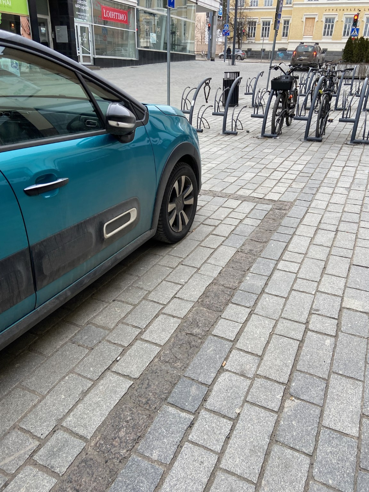
245
駐車スペース | parking space
埋める石の種類で駐車スペースを表現している。
The parking space is indicated by the type of stone to be filled in.
trf /fin
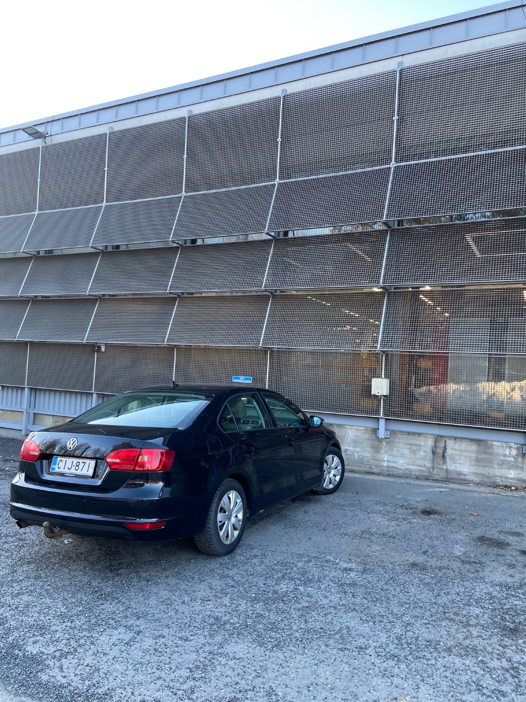
246
駐車場 | parking
かっこいい駐車場。
Cool parking lot.
trf /fin
247
建物 | building
窓から見える建物がカラフルで空がめちゃくちゃ青い。かわいい。
The building seen from the window is colorful and the sky is
so blue. Cute.
str /fin
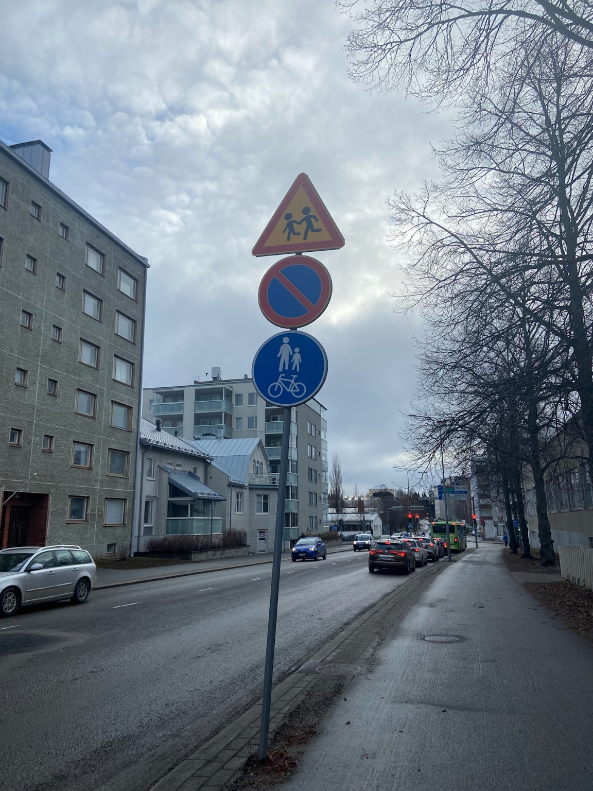
248
標識 | sign
おでんのようになっている標識。
A sign that looks like an Oden.
trf,sgn /fin
249
砂と雪 | sand & snow
砂と雪がティラミスみたいになっている。
Sand and snow are like tiramisu.
ex /fin
250
街区表示 | street number
街区画を石で表示している。
The city block is written in a stone.
trf /fin
251
ロボットスタンバイ中 | robot is ready
おしごと待ちのロボット。
A robot waiting for a job.
ex /fin
252
標識 | sign
火災報知器。アナログな感じがするががっつりコードでつながれている。信頼できそう。
A fire alarm. It looks analog, but it is firmly
connected with a cord. It looks reliable.
sgn /fin
253
クレーン | crane
クレーン。寮の建物のすぐそばにある。
A crane. It is located near the dormitory building.
trf /fin
254
ロボット横断中 | robot is crossing
道路を渡りたいけど車をすぐ探知してしまうのでなかなか渡れないロボット。
The robot wants to cross the road, but it can't because
it detects cars easily.
ex /fin
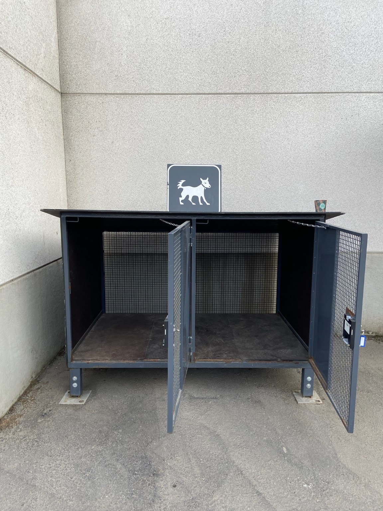
255
ゲージ | cage
スーパーにあるゲージ。日本だと外のポールとかにつなぐイメージだがフィンランドはゲージ。
A cage in a supermarket. In Japan, you would
expect to see a lead connected to a pole outside, but in Finland, it's a cage.
ex /fin
256
電車のドア | door of train
電車のドアがピンクでかわいい。こけないようにねの標識ステッカーもかわいい。
Cute pink train door. The “Don't fall down” sign
sticker is also cute.
trf /fin
257
タンペレ駅 | Tampere station
左手に見えるタワーはいったい何なのか。電波塔兼広告塔かな。
What is the tower on the left? I guess it is a radio tower
and an advertising tower.
trf /fin
258
木の床板 | wooden slab
初めて見る木の床板。電車の線路で木は珍しいきがする。
This is the first time I saw wooden floorboards. I think it is
rare to see wood on a train track.
trf /fin
259
街並み | street scape
ヘルシンキの夜。午前1時。ユバスキュラと違って明るい。さすが首都。
Helsinki at night. It is 1:00 in the morning. Unlike
Jyväskylä, Helsinki is bright. As expected of the capital city.
str,pln /fin
260
標識 | sign
とても分かりやすいサイン。
Very clear signage.
trf,sgn /fin
261
工事現場 | construction site
線路工事中。
The railroad line is under construction.
str /fin
262
エレベーター | elevator
フィンランド（私が訪れたヨーロッパの国も）は古いエレベーターがいっぱいある気がする。
I think Finland (and other European countries I
visited) have many old elevators.
ex /fin
263
降車ボタン | stop button
Turkuのバスの降車ボタン。
Get off button of a bus in Turku.
trf /fin
264
建物 | building
トゥルク市立図書館。おしゃれ。
Turku City Library. Stylish.
str /fin
265
橋 | bridge
Kirjastosilta、図書館の架け橋。Nordic Bridge Prizeを受賞した模様。まさに橋を渡るとトゥルク市立図書館（No.264）が。
Kirjastosilta,
the library bridge, which seems to have won the Nordic Bridge Prize. The Turku City Library
(No.264) is just across the bridge.
str /fin
266
橋 | bridge
高欄のガラスときれいに平らで重厚感のある手すりが絶妙。
The glass of the high railings and the beautifully flat and
massive railing are exquisite.
str /fin
267
ガラスの高欄 | glass bulidge railing
ちゃんとガラス。
The glass is a real glass.
str /fin

268
ガラスの高欄 | glass bulidge railing
角度をつけず並列されている。ガラスが重なっている。
The glass is parallel without any angles. The glass is layered.
str /fin
269
街並み | street scape
石段づくりの道は歩きにくいが、石の並べ方や色で道しるべが可能と気づかされる。実際歩いて下を見るとその道しるべは見つけにくい。離れてこそ見える道。
The stone path is
difficult to walk on, but the way the stones are arranged and the colors of the stones make me
realize that it is possible to mark the way. In fact, when I walk down the path and look down,
it is difficult to find the mark. The path mark can only be seen from a distance.
str,pln /fin
270
ベンチ | bench
いかのも北欧っぽいベンチ。そこら中に落書きがある、日本は少ないと思う。
The bench is very Scandinavian. There are graffiti all
over the place, which I think is rare in Japan.
pln /fin
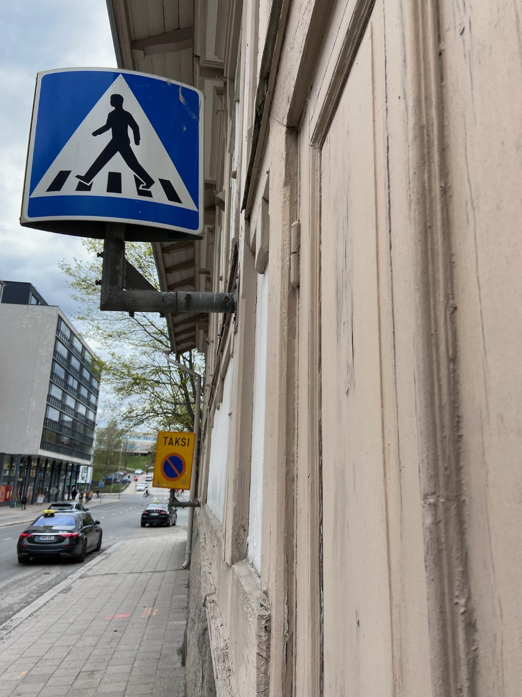
271
標識 | sign
立体感のある標識。
A sign with a three-dimensional feel.
trf,sgn /fin

272
駐車場 | parking
見たことない形の駐車場。コンクリートの感じも味があって良い。
A parking lot in a shape I have never seen before. The
concrete has a nice taste.
trf,str /fin
273
天井 | ceiling
フィンランド国立図書館の天井。映画とかに出てくるような図書館の造り。
The ceiling of the Finnish National Library. The library
looks like something appeared in a movie.
str /fin
274
マンホール | manhole
マンホール。下の文字はスウェーデン語。
Manhole. The letters below are in Swedish.
mh /fin
275
標識 | sign
微妙に揃えないあたりにユーモアを感じる。
I feel the humor in the way they are not aligned slightly.
trf,sgn /es
276
街並み | street scape
タリン旧市街の街並み。
Old town of Tallinn.
str,pln /es
277
ミラー | mirror
カーブミラーが下まつげがもりもりでかわいい。
Cute curved mirror with many lower eyelashes.
trf,pln /es
279
標識 | sign
電動スクーターが当たり前になってきているので駐車スペースを示す標識もある。
There are signs indicating parking spaces for
electric scooters as they are becoming the norm.
trf,sgn /fin
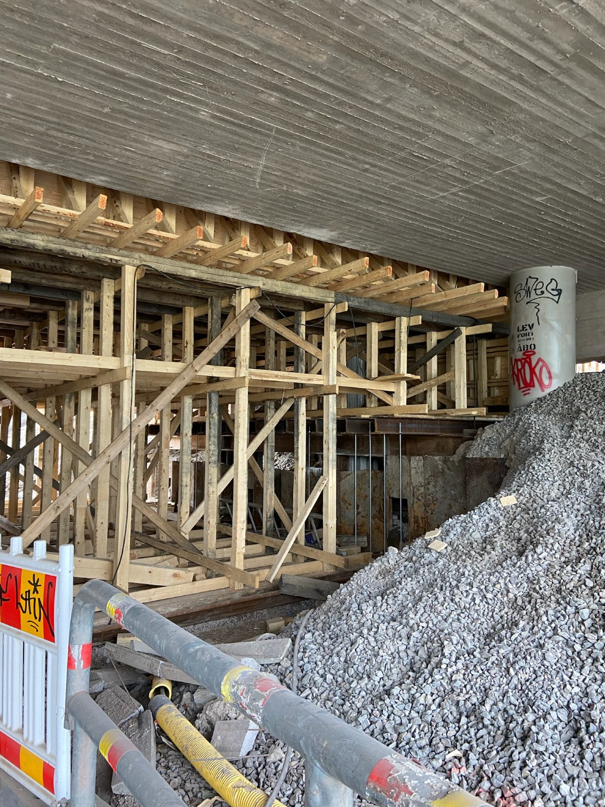
280
工事現場 | construction site
橋の工事中。木とコンクリートと鉄筋が一度に使用されている珍しいタイミング。
Bridge under construction. Unusual timing with wood,
concrete and rebar being used together.
str /fin
281
標識 | sign
フィンランド語、スウェーデン語、英語で工事であることを告知。
Announcement in Finnish, Swedish, and English that lets us
know under construction.
str,sgn /fin
282
道路 | way
交差点の歩行者ラインを全部延長したらこうなるもよう。
This is what it will look like when all the pedestrian lines at
the intersection are extended.
trf /fin
283
工事現場 | construction site
ほやほやなコンクリート。
Fresh concrete.
str /fin
284
工事現場 | construction site
だいぶ乾いたコンクリート。
Concrete that has dried up a lot.
str /fin
285
工事現場 | construction site
工事中。日本に比べてだいぶ情報が省略されている工事案内。
Under construction. Construction guide with omitted
information than in Japan.
str /fin
286
工事現場 | construction site
アームがカニみたいになっている。
The arm looks like a crab.
str /fin
287
ケーブルカー停留場 | stop of cable car
ケーブルカーの降り場。地元住民によればよく壊れているらしい。トゥルクにて。
The cable car station. According to a local resident,
the cable car is often broken. In Turku.
trf /fin
288
ケーブルカー | cable car
なぜかめちゃくちゃ錆びているケーブルカーの囲い。そして距離が全然ない。私はケーブルカーを使わず2分で緩やかな階段をくだりました。
For some reason, the cable
car enclosure are very rusty. And there is no distance at all from up to down. I went down the
gentle stairs in 2 minutes instead of using the cable car.
trf /fin
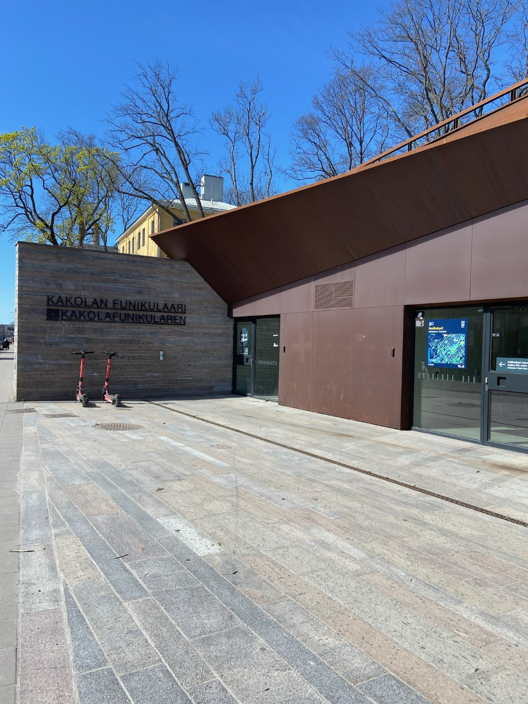
289
ケーブルカー停留場 | stop of cable car
ケーブルカーの乗り場。
Cable car station.
trf /fin
290
標識 | sign
重厚感がすごい扉。
The door with a great sense of massiveness.
trf,sgn /fin
291
車庫(?) | garage(?)
多分駐車場の入り口。
Probably the entrance to the parking lot.
trf /fin
292
建物 | building
カラフルな住宅群。
A group of colorful houses.
str /fin
293
標識 | sign
背景の感じも相まってかわいい標識。
Cute sign with the background.
trf,sgn /fin
294
踏切 | crossing
トゥルクの踏切。バーが赤と黄色。
A railroad crossing in Turku. The bars are red and yellow.
trf /fin
295
建物 | building
美しい並びの建物。物置っぽい。
A beautiful row of buildings. It looks like a storage.
str /fin
296
トンネル | tunnel
トゥルク城のトンネル。レンガが時代を感じる。
Turku Castle Tunnel. The bricks make me feel the age of the castle.
str /fin
297
トンネル | tunnel
トゥルク城のトンネル。別アングル。
Tunnel of Turku Castle. Another angle.
str /fin

298
トゥルク城 | Turku castle
トゥルク城。フクロウみたいな顔がかわいい。
Turku Castle. Cute owl-like face.
str /fin
299
橋 | bridge
小川にかかる橋。ムーミンで登場する橋もこんな感じなのでフィンランドを感じられる。
A bridge over a stream. This is the kind of bridge
that appears in Moomin, so I can feel Finland.
str /fin
300
クレーン | crane
馬っぽいクレーン。
A horse-like crane.
trf,str /fin